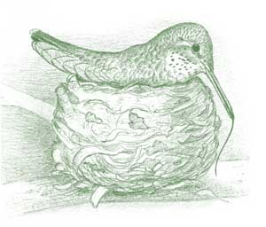
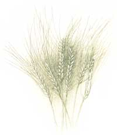
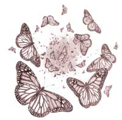

View Point : Reflections on the Genetic Manipulation of Life
In the slender shoulders of the myrtle tree outside my kitchen window, a hummingbird built her nest. It was in April, the sexiest month, season of bud and courtship displays, though I was at the sink washing breakfast dishes and missing the party, or so you might think.
Then my eye caught a flicker of motion outside, and there she was, hovering uncertainly. She held in the tip of her beak a wisp of wadded spiderweb so tiny I wasn't even sure it was there, until she carefully smoodged it onto the branch. She vanished then, but in less than a minute she was back with another tiny white tuft she stuck on top of the first. For more than an hour she returned again and again, increasingly confident of her mission, building up by infinitesimal degrees a whitish lump on the branch-and leaving me plumb in awe of the supply of spiderwebbing on the face of the land.
I stayed at my post, washing everything I could find, while my friend did her own housework out there. When the lump had grown big enough-when some genetic trigger in her small brain said, "Now, that will do"-she stopped gathering and sat down on her little tuffet, waggling her wings and tiny rounded underbelly to shape the blob into a cup that easily would have fit inside my cupped hand. Then she hovered up, inspected it from this side and that, settled and waddled with greater fervor, hovered and appraised some more, and dashed off. She returned with fine filaments of shredded bark, which she wove into the webbing along with some dry leaflets and a slap-dab or two of lichen pressed onto the outside for curb appeal.
When she had made of all this a perfect, symmetrical cup, she did the Most Surprising thing of all: She sat on it, stretched herself forward, extended the unbelievable length of her tongue and licked her new nest in a long, upward stroke from bottom to rim. Then she rotated herself a minute degree, leaned forward and licked again. I watched her go all the way around, licking the entire nest in a slow rotation that took 10 minutes to complete and ended precisely back at her starting point.
Passed down from hummingbird great-grandmothers immemorial, a spectacular genetic map in her mind had instructed her at every step, from snipping out with her beak the first spiderweb tuft to laying down whatever salivary secretion was needed to accrete and finalize her essential creation. Then, suddenly, that was that. Her busy urgency vanished, and she settled in for the long stillness of laying and incubation.
If you had been standing with me at my kitchen sink to witness all this, you would likely have breathed softly, as I did, "My God." The spectacular perfection of that nest, that tiny tongue, that beak calibrated perfectly to the length of the tubular red flowers from which she Sucks nectar, taking away pollen to commit the essential act of copulation for the plant that feeds her every piece of it all, my God. You might be expressing your reverence for the details of a world created in seven days, 4,004 years ago (according to some biblical calculations), by a divine being approximately human in shape. Or you might be revering the details of a world created by a billion years of natural selection acting utterly without fail on every single life-form, one life at a time.
The environmental challenges loom as something on the order of a cancer that might well make personal allergies look like a sneeze.
For my money the latter is the greatest show on Earth and a church service to end all. I have never understood how anyone could have the slightest trouble blending religious awe with a full comprehension of the workings of life's creation.
Charles Darwin was a religious man, blessed with an extraordinary patience for observing nature's details, as well as the longevity and brilliance to put it all together. In his years of studying animate life he noticed four things. which any of us could notice today if we looked hard enough. They are:
1. Every organism produces more seeds or offspring than will actually survive to adulthood.
2. There is variation among these seeds or offspring,
3. Traits are passed down from one generation to the next.
4. In each generation the survivors succeed-that is, they survive-because they possess some advantage over the ones that don't succeed. Because they survive they will pass that advantage on to the next generation. Over time therefore, the incidence of that trait will increase in the population.
Bingo: The greatest, simplest, most elegant logical construct ever to dawn across our curiosity about the workings of natural life. It is inarguable, and it explains everything.
Most people have no idea that this, in total, is Darwin's theory, of natural selection. Furthermore parents who tell their children not to listen to such talk because "it's just a theory" are ignorant of what that word means. A theory, in science, is a coherent set of principles used to explain and predict a class of phenomena. Thus, gravitational theory explains why objects fall when you drop them, even though it, too, is "just a theory." Darwin's has proven to be the most robust unifying explanation ever devised in biological science. It's stunning that he could have been so right-scientists of Darwin's time knew absolutely nothing about genetics. After a century and a half, during which time knowledge expanded boundlessly in genetics, geology, paleontology and all areas of natural science, his simple, logical construct continues to explain and predict perfectly the existence and behavior of every Earthly life-form we have ever studied. As the unifying principle of natural sciences, it is no more doubted among modern biologists than gravity is questioned by physicists.
Nevertheless, in a bizarre recent trend, a number of states have limited or even outright banned the teaching of evolution in high schools, and many science textbooks, in turn, have wimped out on the Subject. As a consequence, an entire generation of students is arriving in college unprepared to comprehend or pursue informed science. Many science teachers I know are nostalgic for at least one aspect of the Cold War days, when Sputnik riveted us to the serious business of training our kids to real science, instead of allowing it to he diluted or tossed out to assuage the insecurities of certain ideologues.
We dilute and toss at our peril. Scientific illiteracy in our population is leaving too many of us unprepared to discuss or understand much of the damage we are wreaking upon our atmosphere, our habitat and even the food that enters our mouths. Friends who opted in school for English lit instead of microbiology (an option I Myself could easily have taken) sometimes come to me and ask, "In 200 words or less, can You explain to me why I should be nervous about genetic engineering?" I tell them, "Sit down, I'll make you a cup of tea, and then get ready for more than 200 words."
A sound-bite culture can't discuss science very well. Exactly what we're losing when we reduce biodiversity, the causes and consequences of global-warming these traumas can't be adequately, summarized in an evening news wrap-up. Arguments in favor of genetically engineered food, in contrast, are dangerously simple: A magazine ad for an agribusiness touts its benevolent plan to "feed the world's hungry with our vitamin-engineered rice!"
To which I could add in reply my own snappy motto: "if you thought that first free hit of heroin was a good idea ... " But before you really can decide whether or not you agree, you may need the words above and a few thousand more. If so, then sit down. I have a cup of tea, and bear with me. This is important.
At the root of everything. Darwin said, is that wonder of wonders, genetic diversity. You're unlike your sister, I litter of pups is its own small Rainbow Coalition, and every grain of wheat in a field holds inside its germ a slightly separate destiny. You can't see die differences until you cast the seeds on the ground and grow them out, but sure enough, some will grow into taller plants and some shorter, some tougher. Some sweeter. In a good year all or most of them will thrive and give you wheat. But in a had year a spate of high winds may take down the tallest stalks and leave standing at harvest time only. Say, the 10 percent of the crop that had a "shortness" gene. And if that wheat comprises your winter's supply of bread plustile only seed you'll have lot, next year's crop, then you'll be almighty glad to have that small, short harvest.
Genetic diversity, in domestic populations as well as wild ones, is nature's sole insurance policy. Environments change: Wet years, are followed by droughts, fakes dry up, volcanoes rumble ice ages dawn. It's a big bad world out there for a little strand of DNA. But a population will persist over time if, deep within the scattered genetics of its ranks, it is literally prepared for anything. When the windy years persist for a decade, the wheat population will be overtaken by a preponderance of shortness, but if the crop maintains its diversify, there will always be recessive aspirations for height hiding in there somewhere waiting to have their day.
How is the diversity maintained? That old black magic called sex. Every seed has two parents. Plants throw their sex to the wind to a hummingbird's tongue to the knees of a bee-in April you are inhaling sex, and sneezing. In the process, each two parents put their scrambled genes into offspring that represent whole new genetic combinations never before seen on Earth. Every new outfit will be ready for something, and together-in a large-enough population-the whole crowd will be ready for anything. Individuals will die, not at random but because of some fatal misfit between what an organism has and what's required. But the population will live on, moving always in the direction of fitness (however-fitness" is at the moment defined), not because anyone has a master plan but because survival carries fitness forward and death doesn't.
People have railed at this reality, left and tight, since the evening when a British ambassador's wife declared to her husband, "Oh dear, let us hope Mr. Darwin isn't right, and if he is, let us hope no one finds out about it!" Fundamentalist Christians seem disturbed by a scenario in which individual will is so irrelevant. They might be surprised to learn that Stalin tried to ban the study of genetics and evolution in Soviet universities for the opposite reason, attacking the idea of natural selection-which acts only at the level of the individual-for being anti-Communist. Through it all, the little engines of evolution have kept on turning as they have done for millennia, delivering us here and passing on, untouched by politics or what anybody thinks,
Nikolai Vavilov was an astounding man of science, and probably the greatest plant explorer who has ever lived. In his travels through 64 countries between 1916 and 1940, he recorded more crop diversity than anyone had known existed, and founded the world's largest seed collection.
As he combed continents looking for primitive crop varieties, Vavilov noticed a pattern: Genetic variation was not evenly distributed. In a small region of Ethiopia lie found hundreds of ancient wheat varieties known only to that place. A single New World plateau was astonishingly rich in corn varieties, while another one was rolling in different kinds of potatoes. Vavilov mapped the distribution of his findings and theorized that the degree of a crop's diversity indicated how long it had been grown in a given region, as farmers saved a their seeds through hundreds and thousands of seasons. They also saved more types of seed for different benefits. Popcorn, tortilla corn and roasting corn were derived, over centuries, from one original strain. Within each crop type, the generations of selection also yield a breadth of resistance to all types of pest and weather problems encountered through the years.
By looking through his lens of genetics, Vavilov began to pinpoint the places in the world where human agriculture had originated. Modern genetic research has largely borne out his hypothesis that agriculture emerged independently in the places where the most diverse and ancient crop types, known as land races, are found: in the Near East, northern China, Mesoamerica and Ethiopia.
The industrialized world depends entirely on crops and cultivation practices imported from what we now call the Third World (though evidently it actually was first). In an important departure from older traditions, the crops we now grow in the United States are extremely uniform genetically, due to the fact our agriculture is controlled primarily by a few large agricultural corporations that sell relatively few varieties of seeds. Those who know the seed business are well aware that our shallow gene bank is highly vulnerable: When a crop strain succumbs all across the country, all at once to a new disease (as happened with U.S. corn in 1970), researchers must return to the more diverse original strains for help, So we still rely on the gigantic insurance policy provided by the genetic variability in the land races, which continue to be hand-sown and harvested, year in and year out, by farmers in those mostly poor places from which our crops arose.
Unbelievably, we are now engaged in a serious effort to cancel that insurance policy.
It happens like this. Let's say you are an Ethiopian farmer growing a land race of wheat-a wildly variable, husky mongrel crop that has been in your family for hundreds of years. You always lose some to wind and weather, but the rest still comes through every year. Lately, though, you've been hearing about a kind of Magic Wheat that grows six times bigger than your crop, is easier to harvest and contains vitamins not found in ordinary wheat. And amazingly enough, by special arrangement with the government, it's free.
Readers who have even the slightest acquaintance with fairy tales will already know there is trouble ahead in this story, The Magic Wheat grows well the first year, but its rapid, overly green growth attracts a startling number of pests. You see insects on this crop that never have eaten wheat before, in the whole of your family's history. You watch, you worry. You realize that you're going to have to spray a pesticide to get this crop through to harvest. You're not so surprised to learn that by special arrangement with the government, the same company that gave you the free seed can sell the pesticide you need. It's a good M. ficide, they use it all the time in America, but it costs money you don't have, so you'll have to borrow against next year's crop.
The second year, you will be visited by a terrible drought and your crop will not survive to harvest at all. Every stalk dies. Magic Wheat from America doesn't know beans about Ethiopian drought. The end,
Actually, if the drought arrived in Year Two and the end came that quickly, you'd be very lucky, because chances are good you'd still have some of your family-line seed around. It would be much more disastrous if the drought waited until the eighth or ninth year to wipe you out, for then you'd have no wheat left at all, Magic or otherwise. Seed banks, even if they're 11,000 years old, can't survive for more than a few years on the shelf if they aren't grown out as crops year after year. they die-or else get ground into flour and baked and eaten-and then this product of a thousand hands and careful selection is just gone, once and for all.
This is no joke. The infamous potato famine or Southern Corn leaf Blight catastrophe could happen again any day now, in any place where people are once again foolish or poor enough to be coerced (as was the case in Ireland) to plant an entire country in a single genetic swain of a food crop.
While agricultural companies have purchased, stored and patented certain genetic materials from old crops, they cannot engineer a crop, ever, that will have the resilience of land races under a wide variety of environmental conditions. Genetic engineering is the antithesis of variability because it removes the wild card-that beautiful thing called sex-from the equation.
This is our new magic bullet: We can move single genes around in a genome to tender a specific trait that nature can't put there, Such as ultrarapid growth or vitamin A in rice. Literally, we could put a wolf in sheep's clothing. But solving agricultural problems this way turns out to be far less broadly effective than the old-fashioned multigenic solutions derived through programs of selection and breeding. Crop predators evolve in quick and mysterious ways, while gene splicing tries one simple tack after another, approaching its goal the way Wile E. Coyote tries out each new gizmo from Acme only once, only to be outwitted by Roadrunner. Crestfallen, Wile E. goes back to the drawing board.
Wendell Berry, with his reliable wit, wrote that genetic manipulation in general and cloning in particular: " ... besides being a new method of sheep-stealing, is only a pathetic attempt to make sheep predictable. But this is an affront to reality. As any shepherd would know, the scientist who thinks he has made sheep predictable has only made himself eligible to be outsmarted."
I've heard less knowledgeable people comfort themselves on the issue of genetic engineering by recalling that humans have been pushing genes around for centuries, through selective breeding of livestock and crops. I even read one howler of a quote that began, "Ever since Mendel spliced those first genes... " These people aren't getting it, but I don't blame them-I blame the religious fanatics who kept basic biology out of their grade-school textbooks. Mendel did not splice genes; he didn't actually control anything at all. He simply watched peas to learn how their natural system of genetic recombination worked.
The farmers who select their best sheep or grains to mother the following year's crop are working with the evolutionary force of selection, pushing it in the direction of their choosing. Anything produced this will still work within its natural evolutionary context of variability, predators', disease resistance and so forth. But tampering with genes outside the checks and balances you might call the rules of God's laboratory is an entirely different process. It's turning out to have unforeseen, sometimes stunning, consequences.
To choose one example among many, genetic engineers have spliced a bacterium into a corn plant. It was arguably a good idea. The bacterium is Bacillus thuringensis (Bt) a germ that causes caterpillars' stomachs to disintegrate. It doesn't harm humans, birds, or even ladybugs or bees, so it's one of the most useful pesticides we've ever discovered.
Organic farmers ha% e worked for years to expedite the path of the naturally Occurring lit spores from the soil, where the bacterium lives, Onto their plants. YOU Can buy this germ in a can at the nursery and shake it onto your tomato plants, where it makes caterpillars croak before sliding hack into the soil it came from farmers have always used nature to their own ends, employing relatively slow methods circumscribed within tile context of natural laws. But genetic engineering took a giant step and spliced pail of the bacteriums DNA into a corn plants DNA chain so as tile corn grew, each of its cells would contain the bacterial function of caterpillar-killing. When each grain produced pollen, it would have a secret weapon against tile corn worms that like to crawl down silks to ravage the crop. So far, so good.
But when Bt corn sheds its pollen and casts it to the wind, as corn has always done (it's pollinated by wind not by bees), it dusts a fine layer of fit pollen onto every tree and bush in the neighborhood of every farm that grows it which is rapidly, for this popular crop, becoming the territory known as the United States. There the Bt pollen may infect any butterfly larva in its path. Populations of monarch butterflies those hold little pilgrims who migrate all the way to Mexico and back by their tissuethin wings, are plummeting fast. While there are many reasons for this (for example, their winter inter forests in Mexico are bering burned), no reasonable person can argue that dusting them with a lethal bacterium is going to help matters, So, too will be the fate of other butterflies more obscure, and more endangered.
And if that doesn't happen to break your heart, just wait awhile, because some filling that pollinates your food or builds tile soil also may be destined for extinction. And there's another practical problem: The massive exposure to Bt now contained in every cell of this corn, is killing off all crop predators except those few that have mutated a resistance to this long-useful pesticide. As a result, those super-resistant mutants are taking over in exactly the same way that overexposure to antibiotics is facilitating the evolution of antibioticresistant diseases in humans.
Would you trust a guy in a suit who's never given away a nickel in his life, who now tells you he's made you some free Magic Wheat?
In this context of phenomenal environmental upsets. with even larger ones just Offstage awaiting their cue, it's a bit surprising that the objections to genetic engineering we hear most about are the human health effects. It is absolutely true that new DNA combinations can create proteins we aren't prepared to swallow; notably, genetic manipulations in corn unexpectedly created antigens to which some humans are allergic, The potential human ills caused by ingestion of engineered foods remain an open category-which is scary enough in itself, and I don't mean to minimize it. But there are so many ways for genetic manipulation to destroy our habitat and Our food systems that the environmental challenges loom as something on the order of a cancer that might well make personal allergies look like a sneeze.
If genetically reordered organisms infiltrate natural populations, they may rapidly change the genetics in a way that could seal the entire species' doom. A scenario dangerously omnipresent is pollen escaping from genetically manipulated crops, creating new weeds that we cannot hope to remove from the face of the earth. Engineered genes don't play by the rules that have organized life for 3 billion years (or, if you prefer, 4,004). And in this case, winning means loser takes all.
What will it mean for a handful of agribusinesses to control the world's ever-narrowing seed hanks? What about the chemical dependencies they're creating for farmers in developing countries where government deals with multinational corporations are including farmers to grow these engineered crops? What about the business of patenting and owning genes? Can there be any good in this for the flat-out need of people trying to feed themselves? Does it seem safe, the world now being what it is, to give up self-sustaining food systems in favor of dependency on the global marketplace? And finally, would you trust a guy in a suit who's never given away a nickel in his life, who now tells you lie's made you some free Magic Wheat?
These are not questions to take lightly as we stand here in the epicenter of corporate agribusiness and look around at the world, asking,-Why on earth would they hate us?" The general ignorance of U.S. populations about who controls global agriculture reflects our trust in an assured food supply. Elsewhere, in places where people grow more food, watch less TV and generally encounter a greater risk of hunger than we do, they mostly know what's going on. In India, farmers, persist in burning to the ground trial crops of transgenic cotton, and they forced their government to ban Monsanto's "Terminator technology," which causes plants to kill their own embryos so no viable seeds will survive for a farmer to replant in the next generation (meaning he'd have to buy new ones, of course). Much of the world has already refused to import genetically engineered foods or seeds from the United States. But because of the power and momentum of the World Trade Organization, fewer and fewer countries have the clout to resist reconstruction of their food supply around the scariest New Deal ever.
Even standing apart from the moral and political questions-if a scientist can stand anywhere without stepping on the politics of what's about to he discovered-there are consequences in the science of the matter no one knew how to anticipate. When the widely publicized Human Genome Project completed its mapping of human chromosomes, it offered an unsettling, not-so-widely publicized conclusion: Instead of the 100,000 or more genes that had been expected, based on the number of proteins we must synthesize to be what we are, we have only about 30,000-roughly the same number as a mustard plant.
This evidence undermined the central dogma of how genes work; that is, the assumption of a clear-cut chain of processes leading from a single gene to the appearance of the trait it controls. Instead, the mechanism of gene expression appears vastly more complicated than had been assumed since Watson and Crick discovered the structure of DNA in 1953. The expression of a gene may be altered by its context, such as the presence of other genes on the chromosome near it. Yet, genetic engineering operates on assumptions based on the simpler model. Thus, single transplanted genes often behave in starling ways in an engineered organism, often proving lethal to themselves, or, Sometimes, neighboring organisms. In light of newer findings, geneticists increasingly concede that gene-tinkering is to some extent shooting in the dark Barry Commoner, senior scientist at the Center for the Biology of Natural Systems at Queens College, laments that while the public's concerns are often derided by industry scientists as irrational and uneducated, the biotechnology industry is conveniently ignoring the latest results in the field "which show that there are strong reasons to fear the potential consequences of transferring a DNA gene between species."
Recently I heard Joan Dye Gussow, who studies and writes about the energetics, economics and irrationalities of global food production, discussing some of these problems. She mentioned the alarming fact that pollen from genetically engineered corn is so rapidly contaminating all other corn that we may soon have no naturally bred corn left in the United States. "This is a fist in the eye of God," she said, adding with a sad little laugh, "and I'm not even all that religious." Whatever you believe in-whether God for you is the watchmaker who put together the intricate workings of this world in seven days or seven hundred billion days-you'd be wise to believe the part about the fist.
Religion has no place in the science classroom, where it may abridge students' opportunities to learn the methods, discoveries and explanatory hypotheses of science rather its place is in the hearts of the women and men who study and then practice scientific exploration. Ethics can't influence the outcome of an experiment, but they can serve as a useful adjunct to the questions that get asked in the first place, and to the applications thereafter. (One must wonder what chair God occupied, if any, in the Manhattan Project.) In the halls of science there is often an unspoken sense that morals and objectivity can't occupy the same place. That is balderdash-they always have cohabited.
Social norms and judgments regarding gender, race, the common good, cooperation, competition, material gain and countless other issues reside in every active human mind, so they were hovering somewhere in the vicinity of any experiment ever conducted by a human. That is precisely why science invented the double-blind experiment, in which, for example, experimental subjects don't know whether they're taking the drug or the placebo and neither does the scientist recording their responses, so as to avoid psychological bias in the results. But it's not possible to double-blind the scientist's approach to the task in the first place, or to the way results will be used. It is probably more scientifically constructive to acknowledge our larger agenda than to pretend it doesn't exist. Where genetic engineering is concerned, I would rather have ethics than profitability driving the program.
I was trained as a biologist, and I can appreciate the challenge and the technical mastery involved in isolating, understanding and manipulating genes. I can think of fascinating things I'd like to do as a genetic engineer, But I only have to stand still for a minute and watch the outcome of 30 million years' worth of hummingbird evolution transubstantiated before my eyes into nest and egg to get knocked down to size. I have held in my hand the germ of a plant engineered to grow, yield its crop and then murder its own embryos, and there I glimpsed the malevolence that can lie in the heart of a profiteering enterprise. There once was a time when Thoreau wrote, "I have great faith in a seed. Convince me that you have a seed there, and I am prepared to expect wonders." By the power vested in everything living, let us keep to that faith. I'm a scientist who thinks it wise to enter the doors of creation not with a lion trainer's whip arid chair, but with the reverence humankind has traditionally summoned for entering places of worship: a temple, a mosque or a cathedral. A sacred grove, as ancient as time.
From the book Small Wonder by Barbara Kingsolver, published by HarperCollins Publishers, Inc. Copyright 2002 by Barbara Kingsolver. All rights reserved. Please see MOTHER's Bookshelf, Page 104.
|
 |
 |
 |